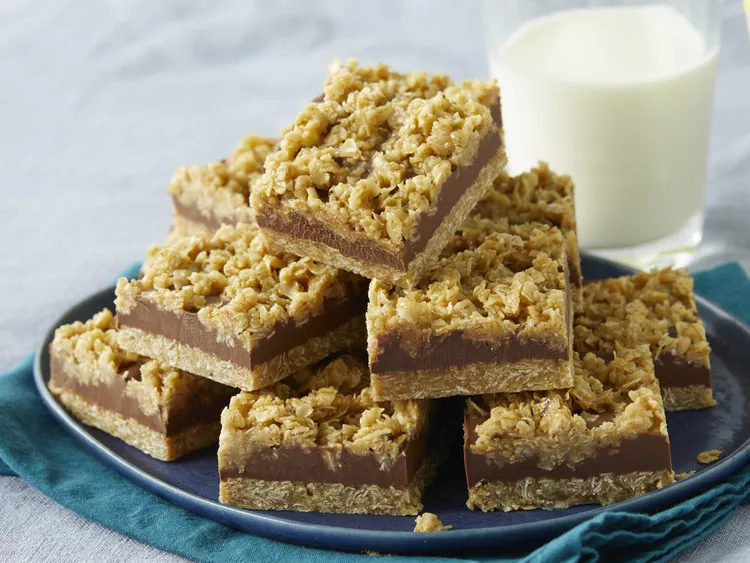

Description
Delicious no-bake oatmeal bars with a chocolaty peanut butter layer.
I made about 100 dozen cookies for the holidays, and these were everyone's favorite!
Ingredients
- 1 cup butter
- ½ cup packed brown sugar
- 1 teaspoon vanilla extract
- 3 cups quick cooking oats
- ½ cup peanut butter
Steps
- Grease a 9-inch square pan.
- Melt butter in a large saucepan over medium heat. Stir in brown sugar and vanilla;
mix in oats. Cook over low heat until ingredients are well blended, about 2 to 3 minutes.
- Press 1/2 of the mixture into the bottom of the prepared pan. Reserve remaining oat mixture
for topping.
- Meanwhile, melt chocolate chips and peanut butter in a small heavy saucepan over low heat,
stirring frequently until smooth. Pour chocolate mixture over crust in the pan and spread evenly
with a knife or the back of a spoon.
- Crumble remaining oat mixture over chocolate layer, pressing down gently. Cover and refrigerate
for 2 to 3 hours or overnight. Bring to room temperature before cutting into bars.